Overview goes here
There are a few built-in configurations that provide a reasonable "Fast" to "Slow" performance result. They are included in the Assets/Resources/ConfigurationPresets folder of the project. These built-in test configurations are also available when you run a build.
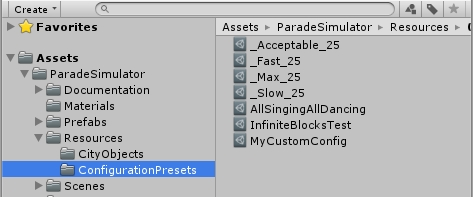In addition to the built-in presets, it is possible to create your own to test specific aspects of performance.
To create a new Parade Test Configuration, in the Project Explorer view in the Assets/Resources/ConfigurationPresets folder, right-click and select Create -> Parade Configuration.
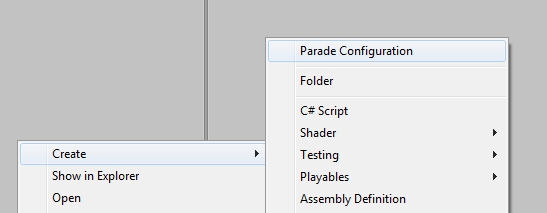Adjust the field values as desired. Each value has a tool tip indicating its function. Reasonable default have been selected for "acceptable" performance (per the sample test hardware noted below).
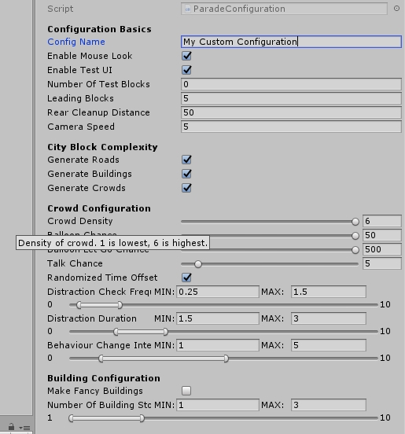To run a test, simply run the MainMenu.unity scene from in the editor or start a built executable. From the main menu, select the desired test configuration by name, and press 'Run Test'.
When a test is running, a basic UI is drawn to show the running test and progress. This UI can also be disabled in the test configuration.
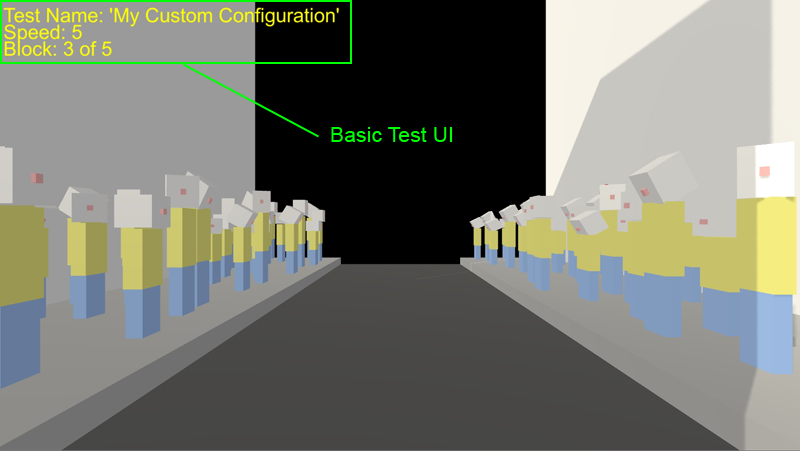When a test is complete, you will be returned to the main menu where you will see basic results. Most important here is the test time and average frame rate.
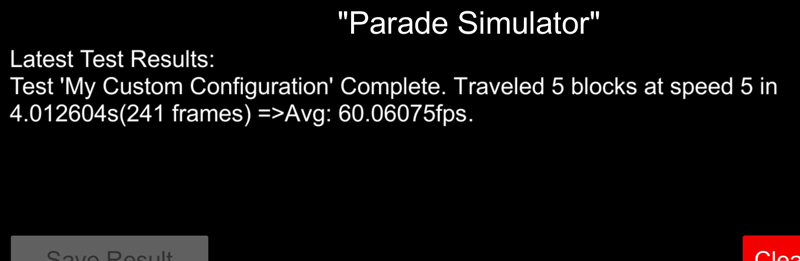By default, test results are written to file under the Application.PersistentDataPath in a sub folder named "ParadeTestResults". For example, on Windows 7 using the existing Build Settings, the file will be located in:
C:\Users\[USERNAME]\AppData\LocalLow\UTECH_Contract\Parade_Simulator_Demo\ParadeTestResults\
This file will be formatted as a CSV so that it can be easily imported into Microsoft Excel or similar for editing and general analysis activities.
There are several test configurations included in the demo Assets/Resources/ConfigurationPresets folder. They are described below.
| Test Configuration | Description | Expected Test Results | Expected Frame Rate | Thumbnail |
| _Acceptable_25 | Middle of the road performance for 25 blocks. | Test will run pretty smoothly. Approximately 50% of the dense crowd will have balloons. The crowd will mostly pay attention to the parade, but can be distracted by other things. Buildings will be 1-2 storeys, and have "fancy" decorations. | ~40-50 FPS | 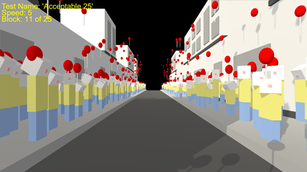 |
| _Fast_25 | Fast performance for 25 test blocks. | Test will run very smoothly. The very sparse crowd has a small chance of having a balloon. The crowd has a very high attention span for the parade. The buildings will all be 1 storey, and have no fancy decorations. | 60 FPS* | 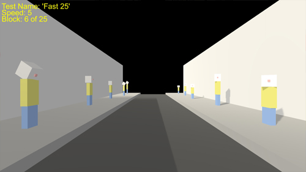 |
| _Max_25 | Maximum practical performance for 25 blocks. | Test will only contain the camera and it's "parade float" (screen black). There will be no road, crowd, or buildings generated, resulting in a baseline "best possible" performance as everything is turned off. | 60 FPS* | |
| _Slow_25 | Slow performance for 25 blocks. | Test will run noticeably slowly. The high density crowd will all have balloons. Everyone has a very short attention span, and will be constantly looking for things to be distracted by. Buildings will be 1-10 storeys and have "fancy" decorations. | ~10 FPS | 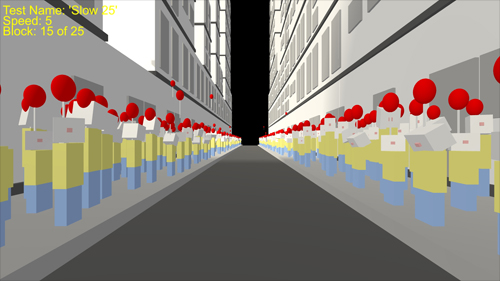 |
| AllSingingAllDancing | "System Crashing" performance, infinite test. | Test will run noticeably slowly. The high density crowd will all have balloons and be constantly changing behaviours and looking to be distracted. Their heads will flip back and forth chaotically. Buildings will all be 10 storeys and have "fancy" decoration. | ~5 FPS** | 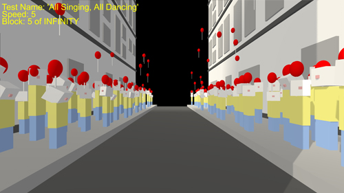 |
| InfiniteBlocksTest | An infinite variant of the "Average 25" test. | Everything will be the same as the "Average 25" test, but the test will run forever until aborted. | ~40-50 FPS | 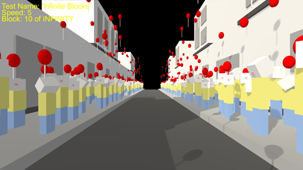 |
| MyCustomConfig | Fast (default) performance for 5 blocks. | Test will run very smoothly, and end very quickly. Really only a sample to show what the instructions in this document yield. | ~60 FPS | 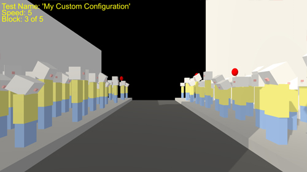 |
*When run in editor and V-Sync is on, frame rate was limited to 60fps
**This test can never be "completed", so this rate is an estimate based on first 10 or so seconds of play. This test may eventually crash the Editor.
There are a few "Debug Keys" that can be used during a demo test run. They are contained in the DEBUG_KEYS region of the CityStreamManager.Update() function.
*Applies to infinite test runs only.
On the main menu, there is a "Clear All Results" button. This button simply deletes the existing test results file and creates a fresh copy. There is also a "Save Result" button which is disabled by default. If you turn off Autosave, this button will have to manually pressed to save individual results.
Assuming you saved your test results, you can open them in a text editor or other program. Below is a (edited/formatted) sample set of data showing the built-in "Fast" and "Slow" test results run both in the Unity Editor and in a build.
| Operating System | Windows 7 Professional 64-bit |
| Unity Version | v2018.1.0f2 |
| CPU | Intel Core i7-4790K @ 4.00GHz |
| RAM | 8 GB |
| GPU | NVIDIA GeForce GTX 970 4GB |
A complete raw system information capture is available in the Documentation folder, called 'DxDiag_Raw.txt'
The results below demonstrate how the "Fast 25" test is very high performance, while the CPU load associated with the "Slow 25" test is very low performance. Note that the in-Editor version of "Fast 25" was capped at ~60fps because the Editor quality settings used included V-Sync. The Build results for "Fast 25" show how fast the test can run without V-Sync. This can serve as a basis for comparing to "Slow 25" test results in a Build running updated code using ECS.
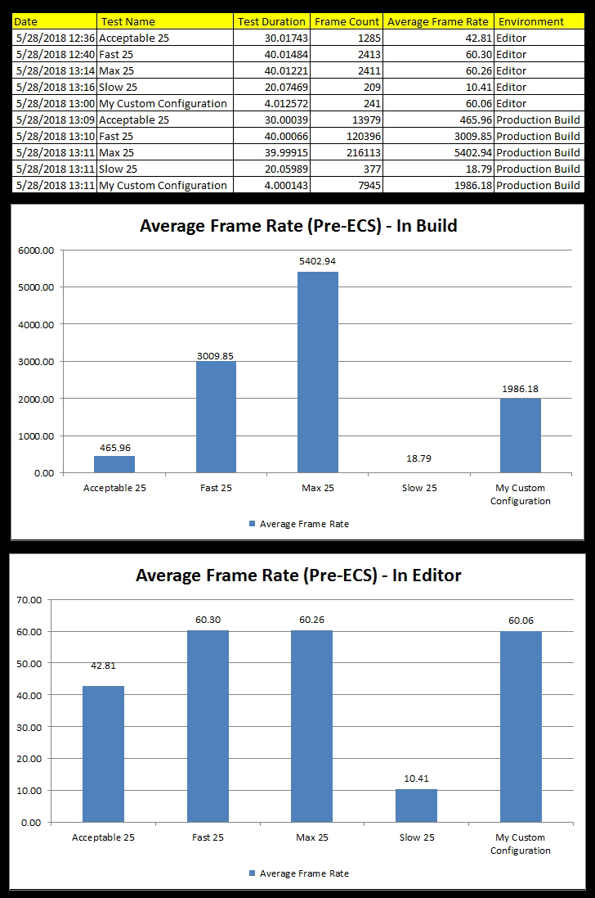In addition to raw data, the tests can also be visually inspected for performance issues. Most notably, frame stutter or "slide show" effects can be seen when running "Slow 25".
In the "Poor Performance" example above, not that the generated blocks (around horizon) do not come in consistently. As performance slows, the rate at which new blocks load in should be consistent (as rate of movement is the same throughout), but it is not. Sometimes, depending on the current load, the new block "pops in" late.
The results are printed in the FileWriter class. By default, the output is simple and only references the test configuration name and the associated performance result. To customize this output to include other test configuraion data, edit the WriteParadeTestResultToFile() function and baseFileHeadings variable inside the FileWriter script.